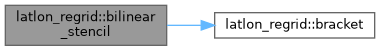
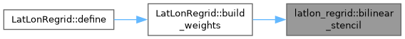
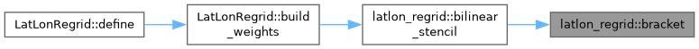
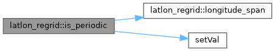
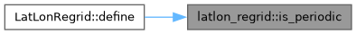
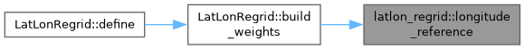
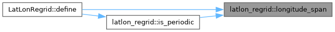
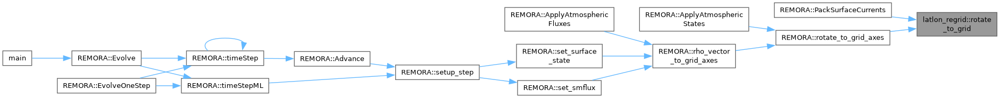
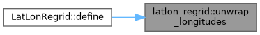
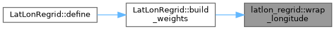

- Generated by
 1.15.0
1.15.0
|
REMORA
Regional Modeling of Oceans Refined Adaptively
|
Classes | |
| struct | Stencil |
Functions | |
| AMREX_GPU_HOST_DEVICE AMREX_FORCE_INLINE int | bracket (const amrex::Real *a, int n, amrex::Real x) |
| AMREX_GPU_HOST_DEVICE AMREX_FORCE_INLINE bool | is_valid (amrex::Real v) |
| AMREX_GPU_HOST_DEVICE AMREX_FORCE_INLINE amrex::Real | wrap_longitude (amrex::Real lon, amrex::Real ref) |
| AMREX_GPU_HOST_DEVICE AMREX_FORCE_INLINE Stencil | bilinear_stencil (const amrex::Real *lon, int nlon, const amrex::Real *lat, int nlat, bool periodic, bool flip_lon, bool flip_lat, amrex::Real lt, amrex::Real pt, amrex::Real tol) |
| AMREX_GPU_HOST_DEVICE AMREX_FORCE_INLINE void | rotate_to_grid (amrex::Real east, amrex::Real north, amrex::Real angle, amrex::Real &xi, amrex::Real &eta) |
| void | unwrap_longitudes (std::vector< double > &lon) |
| double | longitude_span (const std::vector< double > &lon_inc) |
| bool | is_periodic (const std::vector< double > &lon_inc) |
| double | longitude_reference (const std::vector< double > &lon_inc, bool periodic) |
| AMREX_GPU_HOST_DEVICE AMREX_FORCE_INLINE Stencil latlon_regrid::bilinear_stencil | ( | const amrex::Real * | lon, |
| int | nlon, | ||
| const amrex::Real * | lat, | ||
| int | nlat, | ||
| bool | periodic, | ||
| bool | flip_lon, | ||
| bool | flip_lat, | ||
| amrex::Real | lt, | ||
| amrex::Real | pt, | ||
| amrex::Real | tol ) |
The bilinear stencil of one target point.
| lon | longitude axis, increasing and continuous (see unwrap_longitudes) |
| nlon | its length |
| lat | latitude axis, increasing |
| nlat | its length |
| periodic | whether the longitude axis closes the circle, its last interval running from lon[nlon-1] to lon[0] + 360 |
| flip_lon | whether the file stores longitude decreasing, so that index a in the increasing axis is nlon-1-a in the file |
| flip_lat | likewise for latitude |
| lt | target longitude, already in the axis's window (see wrap_longitude) |
| pt | target latitude |
| tol | how far outside the axes a target may lie and still count as inside |
Definition at line 78 of file REMORA_LatLonRegridMath.H.
Referenced by LatLonRegrid::build_weights().


| AMREX_GPU_HOST_DEVICE AMREX_FORCE_INLINE int latlon_regrid::bracket | ( | const amrex::Real * | a, |
| int | n, | ||
| amrex::Real | x ) |
Largest m with a[m] <= x in an increasing array of n values, or -1
Definition at line 26 of file REMORA_LatLonRegridMath.H.
Referenced by bilinear_stencil().

|
inline |
Whether an increasing, continuous longitude axis closes the circle: its span plus one spacing is 360 degrees
Definition at line 152 of file REMORA_LatLonRegridMath.H.
Referenced by LatLonRegrid::define().


| AMREX_GPU_HOST_DEVICE AMREX_FORCE_INLINE bool latlon_regrid::is_valid | ( | amrex::Real | v | ) |
Whether a source value is data rather than a missing-data marker turned to NaN
Definition at line 38 of file REMORA_LatLonRegridMath.H.
|
inline |
The start of the longitude window targets are wrapped into: the axis's first point when it covers the globe, and otherwise centered on the axis, so that a point outside it is reported on the side it misses
Definition at line 163 of file REMORA_LatLonRegridMath.H.
Referenced by LatLonRegrid::build_weights().

|
inline |
The span in degrees of an increasing, continuous longitude axis
Definition at line 145 of file REMORA_LatLonRegridMath.H.
Referenced by LatLonRegrid::define(), and is_periodic().

| AMREX_GPU_HOST_DEVICE AMREX_FORCE_INLINE void latlon_regrid::rotate_to_grid | ( | amrex::Real | east, |
| amrex::Real | north, | ||
| amrex::Real | angle, | ||
| amrex::Real & | xi, | ||
| amrex::Real & | eta ) |
Rotate a vector given as east and north components onto grid axes at angle a from east, counterclockwise (ROMS's angle), as ROMS's set_data does: xi = E cos a + N sin a, eta = -E sin a + N cos a.
Definition at line 126 of file REMORA_LatLonRegridMath.H.
Referenced by REMORA::PackSurfaceCurrents(), and REMORA::rotate_to_grid_axes().

|
inline |
Make a longitude axis continuous across the branch cut (170 .. 180, -180 .. -170 becomes 170 .. 190), each step taken modulo 360
Definition at line 137 of file REMORA_LatLonRegridMath.H.
Referenced by LatLonRegrid::define().

| AMREX_GPU_HOST_DEVICE AMREX_FORCE_INLINE amrex::Real latlon_regrid::wrap_longitude | ( | amrex::Real | lon, |
| amrex::Real | ref ) |
A longitude taken into [ref, ref + 360)
Definition at line 45 of file REMORA_LatLonRegridMath.H.
Referenced by LatLonRegrid::build_weights().
